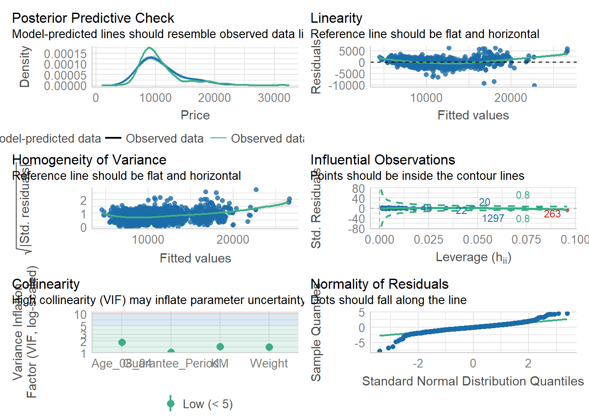

Click to show/hide the code
pacman::p_load(tidyverse, ggstatsplot)In this exercise, other than tidyverse, ggstatsplot will also be used. ggstatsplot is an extension of the ggplot2 package and allows details from statistical tests to be added to the information-rich plots.
pacman::p_load(tidyverse, ggstatsplot)exam_data <- read_csv("data/Exam_data.csv")Rows: 322 Columns: 7
── Column specification ────────────────────────────────────────────────────────
Delimiter: ","
chr (4): ID, CLASS, GENDER, RACE
dbl (3): ENGLISH, MATHS, SCIENCE
ℹ Use `spec()` to retrieve the full column specification for this data.
ℹ Specify the column types or set `show_col_types = FALSE` to quiet this message.exam_data# A tibble: 322 × 7
ID CLASS GENDER RACE ENGLISH MATHS SCIENCE
<chr> <chr> <chr> <chr> <dbl> <dbl> <dbl>
1 Student321 3I Male Malay 21 9 15
2 Student305 3I Female Malay 24 22 16
3 Student289 3H Male Chinese 26 16 16
4 Student227 3F Male Chinese 27 77 31
5 Student318 3I Male Malay 27 11 25
6 Student306 3I Female Malay 31 16 16
7 Student313 3I Male Chinese 31 21 25
8 Student316 3I Male Malay 31 18 27
9 Student312 3I Male Malay 33 19 15
10 Student297 3H Male Indian 34 49 37
# ℹ 312 more rowsgghistostats()The code chunk below uses gghistostats() to create a visual of a one-sample test on English scores.
set.seed(1234)
gghistostats(
data = exam_data,
x = ENGLISH,
type = "bayes",
test.value = 60,
xlab = "English scores"
)
Set seed is important especially when doing variance statistics in order to ensure reproducibility.
ggbetweenstats()The code chunk below uses ggbetweenstats() to create a visual of a two-sample mean test of Maths scores by gender.
ggbetweenstats(
data = exam_data,
x = GENDER,
y = MATHS,
type = "np",
messages = FALSE
)
There are 4 types of statistical approach:
p <- parametric
np <- nonparametric
r <- robust
b <- bayes
ggbetweenstats()The code chunk below uses ggbetweenstats() to create a visual of a oneway ANOVA test of English scores by race.
ggbetweenstats(
data = exam_data,
x = RACE,
y = ENGLISH,
type = "p",
mean.ci = TRUE,
pairwise.comparisons = TRUE,
pairwise.display = "s",
p.adjust.method = "fdr",
messages = FALSE
)
For pairwise display,
s <- displays only significant pairwise comparisons
ns <- displays only non-significant pairwise comparisons
all <- displays all pairwise comparisons
ggscatterstats()The code chunk below uses ggscatterstats() to create a visual of a Significant Test of Correlation between Maths and English scores.
ggscatterstats(
data = exam_data,
x = MATHS,
y = ENGLISH,
marginal = FALSE
)
ggbarstats()Firstly, the Maths scores are binned into 4 groups using cut().
exam_data1 <- exam_data %>%
mutate(MATHS_bins =
cut(MATHS, breaks = c(0,60,75,85,100))
)The code chunk below uses ggbarstats() to create a visual of a Significant Test of Association between Maths scores and gender.
ggbarstats(
data = exam_data1,
x = MATHS_bins,
y = GENDER
)
The code chunk below shows the R packages to be installed and loaded into the R environment for this exercise.
pacman::p_load(readxl, performance, parameters, see)To import the excel worksheet ToyotaCorolla.xls, read_xls() of the readxl package is used, as seen in the code chunk below.
car_resale <- read_xls("data/ToyotaCorolla.xls")
car_resale# A tibble: 1,436 × 38
Id Model Price Age_08_04 Mfg_Month Mfg_Year KM Quarterly_Tax Weight
<dbl> <chr> <dbl> <dbl> <dbl> <dbl> <dbl> <dbl> <dbl>
1 81 TOYOTA … 18950 25 8 2002 20019 100 1180
2 1 TOYOTA … 13500 23 10 2002 46986 210 1165
3 2 TOYOTA … 13750 23 10 2002 72937 210 1165
4 3 TOYOTA… 13950 24 9 2002 41711 210 1165
5 4 TOYOTA … 14950 26 7 2002 48000 210 1165
6 5 TOYOTA … 13750 30 3 2002 38500 210 1170
7 6 TOYOTA … 12950 32 1 2002 61000 210 1170
8 7 TOYOTA… 16900 27 6 2002 94612 210 1245
9 8 TOYOTA … 18600 30 3 2002 75889 210 1245
10 44 TOYOTA … 16950 27 6 2002 110404 234 1255
# ℹ 1,426 more rows
# ℹ 29 more variables: Guarantee_Period <dbl>, HP_Bin <chr>, CC_bin <chr>,
# Doors <dbl>, Gears <dbl>, Cylinders <dbl>, Fuel_Type <chr>, Color <chr>,
# Met_Color <dbl>, Automatic <dbl>, Mfr_Guarantee <dbl>,
# BOVAG_Guarantee <dbl>, ABS <dbl>, Airbag_1 <dbl>, Airbag_2 <dbl>,
# Airco <dbl>, Automatic_airco <dbl>, Boardcomputer <dbl>, CD_Player <dbl>,
# Central_Lock <dbl>, Powered_Windows <dbl>, Power_Steering <dbl>, …lm()The following code chunk is uses lm() to build a multiple linear regression model.
model <- lm(Price ~ Age_08_04 + Mfg_Year + KM +
Weight + Guarantee_Period, data = car_resale)
model
Call:
lm(formula = Price ~ Age_08_04 + Mfg_Year + KM + Weight + Guarantee_Period,
data = car_resale)
Coefficients:
(Intercept) Age_08_04 Mfg_Year KM
-2.637e+06 -1.409e+01 1.315e+03 -2.323e-02
Weight Guarantee_Period
1.903e+01 2.770e+01 Multicollinearity can be checked using check_collinearity() of the performance package, as seen in the code chunk below.
check_collinearity(model)# Check for Multicollinearity
Low Correlation
Term VIF VIF 95% CI Increased SE Tolerance Tolerance 95% CI
KM 1.46 [ 1.37, 1.57] 1.21 0.68 [0.64, 0.73]
Weight 1.41 [ 1.32, 1.51] 1.19 0.71 [0.66, 0.76]
Guarantee_Period 1.04 [ 1.01, 1.17] 1.02 0.97 [0.86, 0.99]
High Correlation
Term VIF VIF 95% CI Increased SE Tolerance Tolerance 95% CI
Age_08_04 31.07 [28.08, 34.38] 5.57 0.03 [0.03, 0.04]
Mfg_Year 31.16 [28.16, 34.48] 5.58 0.03 [0.03, 0.04]Variables with a Variance Inflation Factor (VIF) score of >10 are considered to be highly correlated. In this case, age and manufacturing year have high correlation. Therefore one of the variables will need to be removed from subsequent models.
check_c <- check_collinearity(model)
plot(check_c)Variable `Component` is not in your data frame :/
The normality assumption can be checked using check_normality() of the performance package, as seen in the code chunk below.
# build another model after removing "Mfg_Year"
model1 <- lm(Price ~ Age_08_04 + KM +
Weight + Guarantee_Period, data = car_resale)
check_n <- check_normality(model1)
plot(check_n)
Homogeneity of variances can be checked using check_heteroscedasticity() of the performance package, as seen in the code chunk below.
check_h <- check_heteroscedasticity(model1)
plot(check_h)
We can also perform a complete check using check_model().
check_model(model1)
plot(parameters(model1))
ggcoefstats()ggcoefstats(model1,
output = "plot")